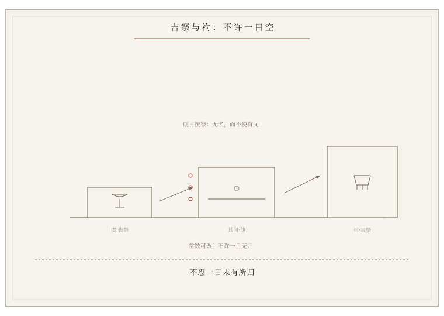

檀弓下 · 四·三十一 · 第 356 课
是日也，以吉祭易丧祭。明日，祔于祖父。其变而之吉祭也，比至于祔，必于是日也接；不忍一日末有所归也。其祭，祝曰「哀荐」，曰「成事」。
说什么事：卒哭那一日，以吉祭换下丧祭；次日，告祭于祖父之庙。若遭变礼（速葬速虞之类），自虞至祔之间，逢刚日便接续设祭，仍是不忍亲有一日无所归。这种祭的祝辞，称「哀荐」、称「成事」。
落在哪一层：以「归」量礼，且以「变」量礼。论礼在常时不空一日，在变时亦不空一日。
为何编在此位：上节言虞至卒哭之常，此节言卒哭至祔之常，兼及不得常礼之变。
【经】是日也，以吉祭易丧祭。明日，祔於祖父。其變而之吉祭也，比至於祔，必於是日也接；不忍一日末有所歸也。其祭，祝曰「哀薦」，曰「成事」。
【注】卒哭吉祭。／祭告於其祖之廟。／末，無也。日有所用接之，《虞禮》所謂「他用剛日」也。
【疏】上云虞卒哭及祔，皆据得常正礼；此经所云，谓不得正礼，故谓之「变」，以其变常礼也。所以有变者，或时有迫促，或事有忌讳，未及葬期，死而即葬者，即《丧服小记》所云赴葬者、赴虞者，三月而后卒哭。／既虞比至于祔以来，必于是日接，谓于是三虞卒哭之间，刚日而连接其祭，谓恒用刚日。所以恒用刚日接之者，孝子不忍使亲每一日之间无所归依。／注「《虞礼》所谓他用刚日」者，此经所云「变」者，虞礼谓之「他」也。案《士虞礼》云：「三虞卒哭，他，用刚日，哀荐曰成事。」郑注云：「他谓不及时而葬者。……则虞与卒哭之间有祭事者，亦用刚日，其祭无名，谓之他者，假设言之耳。」如郑此言，《虞礼》谓之「他」，此经谓之「变」，其义一也。
是日 卒哭之日。
吉祭 渐就于吉之祭。卒哭为吉祭之始，非谓全吉。
丧祭 虞之类，尚凶之祭。
祔 告祭于祖父之庙，使神有所依。
变 变常礼。疏云「或时有迫促，或事有忌讳」，速葬速虞者是。
比至 比，及也；比至于祔，谓自今以至于祔之日。
接 接续设祭，不使有间。
末 郑训「无」。「末有所归」即「无所归」。
他 《士虞礼》之名，与「变」同义。郑云「其祭无名，假设言之」。
哀荐 祝辞之一，以哀荐之。
成事 祝辞之一，告祭事已成。
卒哭这一日，以吉祭换下丧祭。次日，告祭于祖父之庙。若是遭变而趋吉祭，自今直到祔日，逢着刚日就接续设祭，仍是不忍让亲有一日无所归依。这种祭的祝辞，称「哀荐」，称「成事」。
此章讲两件事：一为「祔」，一为「变」。
常礼：虞、卒哭、祔，节节相承。变礼：中间空着的日子，也须拿祭去填。
填的方法很朴素：逢刚日就接一次。填的理由更朴素：不忍一日无归。
第一层 以吉祭易丧祭：换的不是心情，是名分 卒哭之日，祭之名由「丧」转「吉」。
疏云虞时尚凶、祭礼未成；至卒哭，无时之哭已止，故渐就于吉。名一变，则祭之辞、祭之器、祭之容皆随之变。
礼之转折，往往先变其名，后变其实。名不正，实则无从改。
第二层 明日祔于祖父：使神有位 祔者，告于祖庙。
虞是「安之于殡宫」，祔是「告之于祖」。安是暂安，祔是归位。
一层一层往前送，正见古人对「归」的耐心：先使其不悬空，再使其有位次。
第三层 变与常：两种速度，一个标准 疏把「变」讲得很清楚：或时迫促，或事有忌讳，未及葬期而死即葬者，虞与卒哭之间的日子就长了。
日子一长，中间不能空。于是逢刚日接祭。
所以礼的常数可以变，礼的标准不变：不许有一日无归。 这一条，是丧礼里最硬的一条。
第四层 无名之祭：礼肯为「没有名目」的事留位置 郑云「其祭无名，谓之他者，假设言之耳」。
一场不为名目、不为节令、只因「不能空着」而设的祭，礼给它留了一个位置，还给了它两个名字：一个叫「他」，一个叫「变」。
今人办事最怕「没有名目」。古人反倒承认：有些事就是因为不能不做而做，名目是后补的。
第五层 哀荐与成事：一次祭里两个声音 祝辞既称「哀荐」，又称「成事」。
「哀荐」是替孝子说话：我还哀，我把这个哀献上。 「成事」是替礼说话：事已成形，可以往前了。
一句话里两个声音，正是卒哭之际的真实处境：哀未尽，而事须成。礼不许二者取一，只许二者并存。
与今日何干 今人办完丧事，常有一段「空掉的日子」：事办完了，人散了，不知该做什么。此节所示，是古人的办法——不许空着。若有间断，就以最简的祭去填，哪怕它没有名目。
| 左 | 右 |
|---|---|
| 是日 | 卒哭之日 |
| 吉祭 | 渐就于吉 |
| 丧祭 | 尚凶之祭 |
| 祔 | 告于祖父之庙 |
| 比至 | 自今及祔 |
| 接 | 续祭不使有间 |
| 末 | 无 |
| 变 | 常礼之变 |
| 他 | 无名之祭，假设言之 |
画一条自左至右的横线，线上立三座小台，由低渐高：最左之台最低，其上置一豆；中间之台略高，其上只置一空位，不置物；最右之台最高，其上置一鼎。三台之间以短竖线相连，示节节相承。中间空位之台的下方，画两个小圆圈，示「刚日」之接。不画人物。赭色只用在中间那两个小圈。
